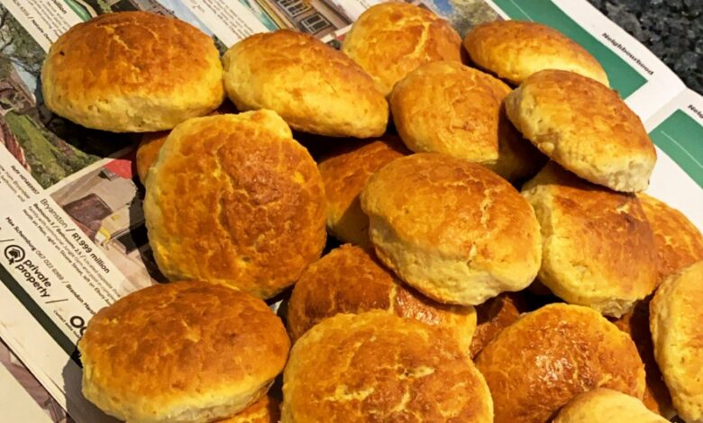
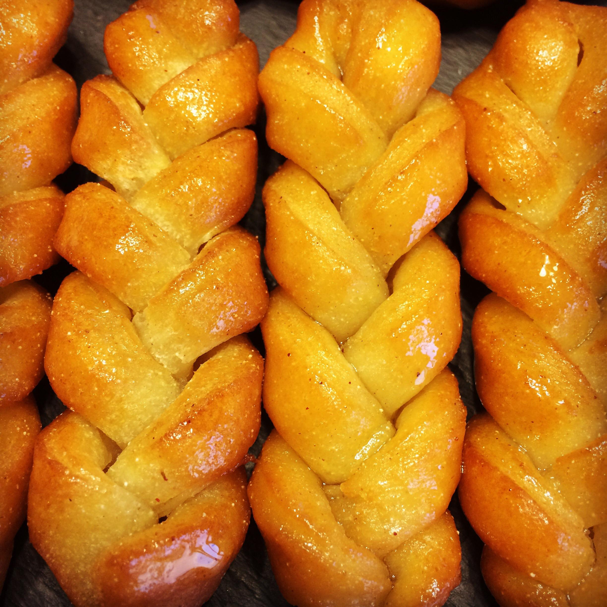

Scones
How to Prepare
Preheat oven to 220°C (428°F) and position the oven tray in the middle. Line two baking trays with baking paper.
Sift flour, salt, and baking powder twice into a large bowl.
Cut butter into small blocks and rub into the flour mixture with fingertips until it resembles breadcrumbs, ensuring no lumps of butter remain.
Add sugar and mix thoroughly with your hands.
In a small bowl, lightly whisk buttermilk and 1 egg. Add this to the flour mixture, mixing with a round-bladed knife. Add water as needed to form a soft, non-sticky dough. Avoid over-mixing.
Turn dough onto a floured surface and gently knead until a ball is formed.
Pat dough out to about 3 cm thick. Use a round metal cutter to cut out scones, placing them on baking trays with 2-3 cm space between each.
Lightly whisk the remaining egg and brush it on top of each scone.
Bake for 15 minutes. Check for doneness by cutting one open; if not fully cooked, bake for an additional 3 minutes.
Main Ingredients: Scones
2 cups all-purpose flour
1/4 cup sugar
1 tbsp baking powder
1/2 tsp salt
1/3 cup cold butter
1/2 cup milk
1 egg
Magwinya
How to Prepare
Mix flour, sugar, yeast, and salt in a bowl
Add warm water and oil; mix into a soft dough
Cover with a tea towel; let rise for 1 hour
After rising, mix dough again for softness; rest for 10 minutes
Heat vegetable oil for deep frying over medium heat
Scoop dough with a spoon into hot oil; fry until golden brown
Drain excess oil on kitchen paper
Serve alone or with tea; for extra indulgence, roll in jam and sugar.
Main Ingredients: Magwinya
4 cups all-purpose flour
2 tsp yeast
1/4 cup sugar
1/2 tsp salt
1 1/2 cups warm water
Oil for frying

Muffins
How to Prepare
Preheat oven to 375°F; line or coat a 12-well muffin pan
Whisk flour, sugar, baking powder, and salt in a large bowl
In another bowl, whisk milk, oil, egg, and vanilla (if using)
Pour wet ingredients into dry; mix until just combined with some lumps
Gently fold in any mix-ins like fruit or chocolate chips
Fill muffin wells with 1/3 cup of batter each
Bake for about 20 minutes until golden brown and a toothpick comes out clean
Main Ingredients: Muffins
2 cups all-purpose flour
1/2 cup sugar
1 tbsp baking powder
1/2 tsp salt
1/2 cup butter (melted)
1 cup milk
2 eggs
Optional: blueberries, chocolate chips

Milk Tart
How to Prepare
To make a milk tart, start by preparing the crust: blend flour, butter, and a bit of sugar until the mixture resembles fine crumbs. Press this mixture into the base of a tart pan and bake at 180°C (350°F) for about 10 minutes until lightly golden.
For the filling, heat milk in a saucepan until it's almost boiling. In a separate bowl, whisk together eggs, sugar, and a bit of flour until smooth.
Gradually stir the hot milk into this mixture, then return it to the saucepan and cook over medium heat, stirring constantly, until it thickens.
Remove the saucepan from heat and stir in vanilla extract. Pour the filling into the pre-baked crust, smoothing it out evenly.
Allow the tart to cool to room temperature, then chill in the refrigerator for at least 2 hours to set.
Once set, sprinkle with a little cinnamon before serving.
Main Ingredients: Milk Taart
1 puff pastry sheet (for crust)
4 cups milk
1 cup sugar
3 tbsp cornstarch
2 eggs
1 tsp vanilla extract
Ground cinnamon (for topping)

Koeksister
How to Prepare
Combine sugar, water, cinnamon sticks, ground ginger, and lemon juice in a saucepan. Bring to a boil, then lower the heat and simmer for 10 minutes. Remove from heat and refrigerate to chill.
In a large bowl, mix flour, baking powder, and salt.
Add butter to the dry ingredients and rub it in with your fingers until the mixture looks like breadcrumbs.
In a separate bowl, whisk together milk and eggs, then pour into the flour mixture. Stir until a soft dough forms.
Roll out the dough on a floured surface to about 1cm thick. Cut into strips, then divide each strip into thirds. Braid or plait the pieces, pinching the ends to seal.
Heat oil to 180°C in a deep fryer or pot.
Fry the koeksisters in batches for 2-3 minutes on each side, or until golden brown. Remove with a slotted spoon.
Dunk the hot koeksisters immediately into the cold syrup, making sure they are well coated.
Place them on a wire rack set over a tray or plate to drain any excess syrup.
Main Ingredients: Koeksister
2 cups all-purpose flour
2 tsp baking powder
1/4 cup butter
1/2 cup milk
1 egg
Syrup: sugar, water, lemon juice

Cake
How to Prepare
Whip eggs and sugar: Beat for 7 minutes until thick, glossy, and tripled in volume.
Whisk flour, baking powder, and salt. Gradually mix into egg mixture in 3 parts, blending briefly.
Melt butter in hot milk. Hot milk helps with aeration.
Mix some batter into hot milk to temper, then slowly pour back into whipped eggs. Mix briefly.
Line 2 cake pans with parchment paper.
Drop pans on the counter to release large bubbles.
30 minutes at 350°F until golden and a toothpick comes out clean. Cake may dome slightly but will flatten as it cools.
Cool upside down for flat layers or right side up if you prefer the dome. Frost or serve with your choice of toppings.
Main Ingredients: Cake
2 1/2 cups all-purpose flour
1 1/2 cups sugar
3/4 cup butter
3 eggs
1 cup milk
2 tsp baking powder
1 tsp vanilla extract